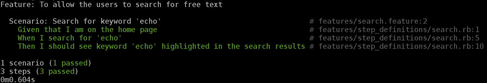

Created by Anisha Narang | Red Hat Inc.
$cucumberQuick look at the Sample Application!
Sample Feature:
#search.feature
Feature: To allow the users to search for free text
Scenario: Search for keyword 'echo'
Given that I am on the home page
When I search for 'echo'
Then I should see keyword 'echo' highlighted in the search results
Step Definition Outline:
Given(/^that I am on the home page$/) do
pending # express the regexp above with the code you wish you had
end
When(/^I search for 'echo'$/) do
pending # express the regexp above with the code you wish you had
end
Then(/^I should see keyword 'echo' highlighted in the search results$/) do
pending # express the regexp above with the code you wish you had
end
$sudo gem install watir-webdriverSample code:
require 'watir-webdriver'
browser = Watir::Browser.new :firefox
browser.goto "www.example.com"
browser.text_field(:id => 'id1').set 'sample text'
browser.button(:name => "button1").click
puts browser.url
browser.close
Sample test script:
./features/step_definitions/search.rb:
Given(/^that I am on the home page$/) do
@browser.goto(@url)
end
When(/^I search for 'echo'$/) do
@browser.text_field(:id => "livefilter-input").set "echo"
@browser.text_field(:id => "livefilter-input").send_keys :return
end
Then(/^I should see keyword 'echo' highlighted in the search results$/) do
@browser.spans(:class => "hl").each do |query|
query.text.should == "echo"
end
end
Console Output:
$ cucumber --format html --out reports/report.html Code available at:https://github.com/anarang/watir-cucumber
Continuos Integration tool
@anisha_narang | anarang@redhat.com
Slides available at: http://bdtcukes-anarang.rhcloud.com/